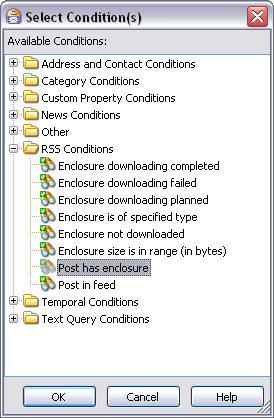

Select Conditions Dialog
You can access this dialog from the New/Edit Rule dialog: Conditions or Exceptions area: Add button
You can access this dialog from the Advanced Search dialog: Conditions or Exceptions area: Add button
The Select Condition(s) dialog enables you to select one or more conditions for a Condition or an Exception when defining criteria for a Rule, a View, or an Advanced Search. The conditions are grouped into a number of folders which you can expand to see the individual conditions in each group.
The Select Condition(s) dialog
Folders and Conditions
This section provides reference information about each condition group and the individual conditions in each group.
Address and Contact Conditions
| Condition | Comments |
|---|---|
| Author has an rss feed | The author of the item you are interested in has an RSS feed |
| Author posted a news article | Author posted a news article which you are interested in |
| Author wrote an rss post | Author created a feed post |
| Contact is in Address Book | Resource is present in the specified address book(s) (Outlook, IM). Pressing the "address book" link calls the Select Address Book dialog |
| Contact is not in any Address Books | The Contact is not associated with any Address Book which exists in Omea |
| Copied(CC) to Contact(s) | Resource sent as a copy to specified Contact(s). Pressing the Contact(s) link calls the Select Contact dialog |
| From Contact(s) | Resource sent by specified Contact(s). Pressing the Contacts(s) link calls the Select Contact dialog |
| Sent to Contacts(s) | Resource sent to specified Contacts(s). Pressing the Contacts(s) link calls the Select Contact dialog |
| Sent/received through specified e-mail account | E-mail is sent or received through the e-mail account. Pressing "specified" link opens the Select Email Account dialog. For more information on user accounts, refer to E-mail Accounts in Omea |
| Sent/received through specified mailing list(s) | Resource is sent or received using specified mailing list. Pressing the “specified” link calls Select Mailing List dialog |
Category Conditions
| Condition | Comments |
|---|---|
|
Sender is in category(ies) |
Sender is related to the specified category(ies). Pressing the category(ies) link calls the Select Category dialog |
| With the following category(ies) | Resource is related to the specified category(ies). Pressing the category(ies) link calls the Select Category dialog |
| With the following category(ies) and their subcategories | Resource is related to the specified category(ies) or the subcategories which the category contains. Pressing the "following" link, opens the Select Category dialog where you can select the Category which includes some Categories in it. The advantage of this conditions is that you don't need to explicitly select all sub categories which a Category may contain, moreover, if you add some subcategories later, you won't need to update the rule or view conditions manually, and Omea will apply this rule automatically |
Custom Property Conditions
The custom property conditions are present and can be used, if you have defined them before. For more information about customizing custom properties, see Organizing your resources using Custom Properties.
Email Conditions
| Condition | Comments |
|---|---|
|
E-mail is of specified importance |
Resource has the specified importance assigned to it. Pressing the "specified" link opens Select Email Importance dialog where you can select either High, Low or Normal importance. |
| Locates in specified outlook folder | Resource is in some Outlook folder. Pressing “specified” link opens the Select Outlook Folder dialog where you can select the desired Outlook folders |
News Conditions
| Condition | Comments |
|---|---|
| Appeared in the specified newsgroups | The item appeared in the specified newsgroup. Pressing the “specified” link calls the Select Newsgroup dialog. |
| Appeared in the specified threads | The item appeared in the specified thread. Pressing the “specified” link calls the Select News Article dialog. When you start typing the thread name, the list of threads will be sorted. Check the threads you are interested in and press OK. |
| Post is a reply in my thread | The item appeared in the thread which you have started |
Other
| Condition | Comments |
|---|---|
| Resource belongs to the specified workspace | Resources belonging to specific workspace(s). Pressing the “specified” link calls the Select Workspace dialog |
| Resource is a clipping | Resource which is a clipping |
| Resource is annotated | The resource has some textual notes |
| Resource is categorized | The resource belongs to category |
| Resource is deleted | Resource is moved to the Deleted Resources folder of the Views and Categories pane |
| Resource is flagged | The relevant resource is flagged with any of the available Flags. |
| Resource is flagged with flag(s) | Resource flagged with specified flags. Pressing the flag(s) link calls the Select Flag dialog. |
| Resource is not read | The relevant resource is marked as “Unread” |
| Size is in the interval (bytes) | Resource with size within the specified interval. Pressing the “in the interval(s)” link calls the Select Size Range dialog |
RSS Conditions
| Condition | Comments |
|---|---|
| Enclosure downloading is completed | The feed enclosure (see Working with Feed Enclosures) is downloaded onto your local system |
| Enclosure downloading is failed | The feed enclosure was not downloaded for some reasons which you can see in the tooltip of the Enclosure Download State column (see Working with Feed Enclosures) |
| Enclosure downloading is planned | The feed enclosure (see Working with Feed Enclosures) is not downloaded yet, but is pending to be downloaded (for details see Feed Options) |
| Enclosure is of specified type | The feed enclosure (see Working with Feed Enclosures)is of the type you specify in the Enter Value dialog |
| Enclosure is not downloaded | The feed enclosure (see Working with Feed Enclosures) is not downloaded, not planned for downloading, and its download didn't fail (for details see Feed Options) |
| Enclosure size is in range (in bytes) | The feed enclosure size is in the range you can specify in the Select Size Range dialog |
| Post has comment(s) | The post you are interested is commented |
| Post in publisher’s category | Resource is a post in a RSS/ATOM feed containing the RSS element <category> the value of which matches the one you will specify after selecting this condition. Pressing the publisher's category link calls the Enter Value dialog |
| Post has enclosure | The post you are interested in has enclosure. For more information, see Working with Feed Enclosures |
| Post is in feed | The post you are interested in is located in some RSS/ATOM feed you are subscribed to. Pressing the “feed” link calls the Select RSS/ATOM Feed dialog |
Task Conditions
| Condition | Comments |
|---|---|
| Overdue task | Task is overdue |
| Task has a reminder | The Task has a reminder |
| Task is completed | Task status is “Completed” |
| Task is in progress | Task status is “In Progress” |
| Task is not completed | Task has any status but it is not “Completed” |
| Task is not started yet | Task status is “Not Started” |
| Task is of specified priority | The task has the priority which you identify in the Select Task Priority dialog. This dialog appears when pressing the “specified” link |
| Task reminder is dated by time span | The task has a reminder which you can specify in the Edit Time Span dialog. This dialog appears after pressing the “time span” link. |
Temporal Conditions
| Condition | Comments |
|---|---|
| Last correspondence is received during period | The resource was received during the specified period. Pressing the “period” calls the Edit Time Span dialog |
| Received within or dated by time span | Resource is received at the specified date or time period. Pressing the “time span” link calls the Edit Time Span dialog |
Text Query Conditions
| Condition | Comments |
|---|---|
| Matching query in the body | Resources with user-defined query in the body |
| Matching query in the source/sender | Source or sender of the found resources matches some text which you type in the Search Query dialog which appears after you press the word “query” |
| Matching query in the subject/header | Resources with user-defined query in the subject/header |
| Subject contains text | The subject of the resource contains text which you type in the Enter Value dialog which appears after you press the word “text” |
| Subject is text | Subject of the found resources matches some text which you specify after selecting this condition |